Cisco Packet Tracer
Install Cisco Packet Tracer Ubuntu 20.04
- buka web, cisco packet tracer
- register akun
- ikuti kelas cisco packet tracer
- resources > download packet tracer, *kyknya, intinya download dari title bar
- atau pakai link download ini
sudo apt updatesudo dkpg -i PacketTracer_800_amd64_build212_final.deb- ok yes
sudo apt install -fsudo dkpg -i PacketTracer_800_amd64_build212_final.deb- ok yes
packettracer- login
- selesai
Basic Setup Router
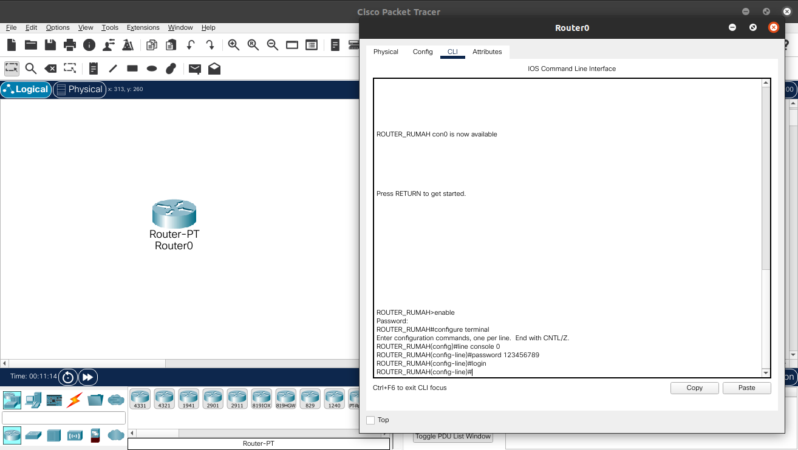
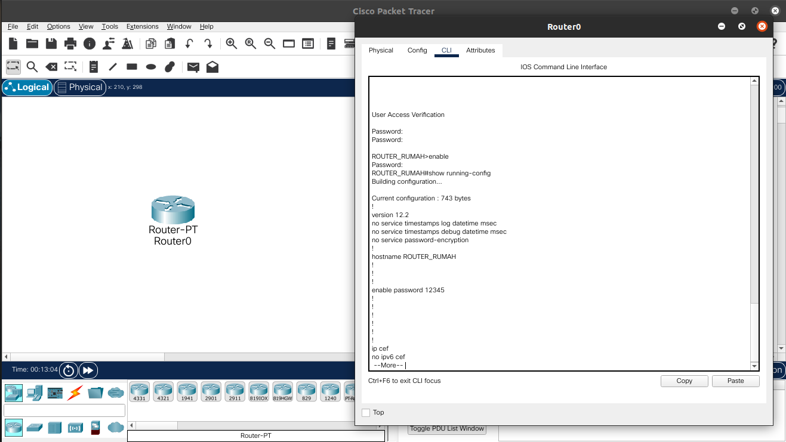
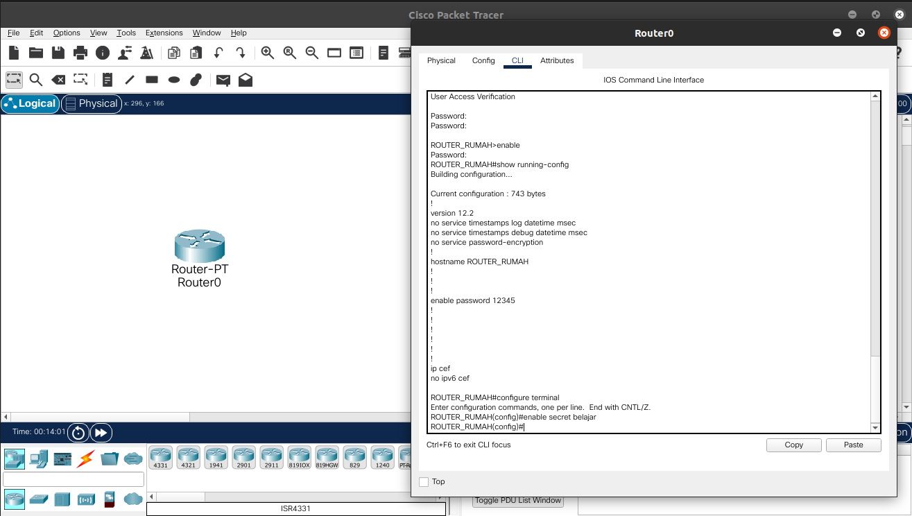
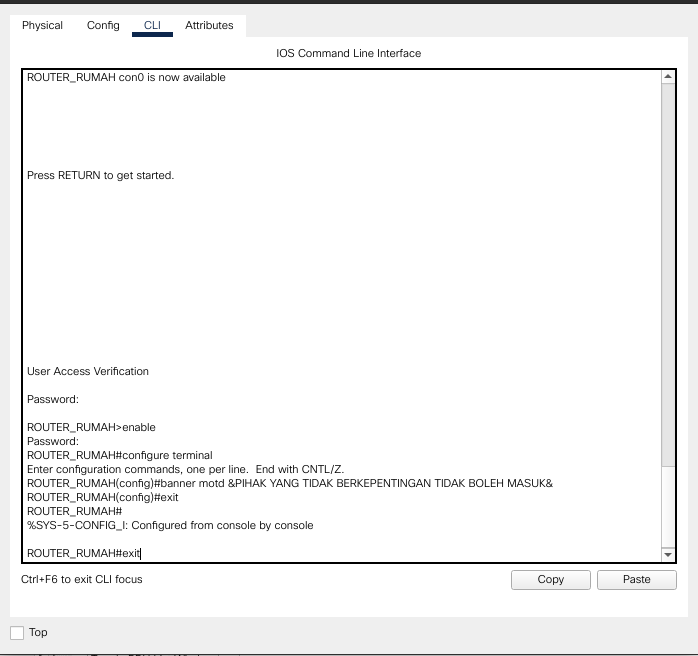
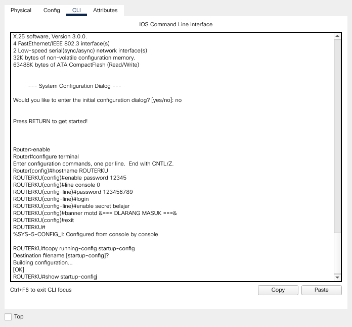
Jadi beberapa commandnya adalah :
Router> enable
Router# configure terminal
Router(config)# hostname ROUTERKU
Router(config)# enable password 12345
Router(config)# line console 0
Router(config-line)# password 123456789
Router(config-line)# login
Router(config-line)# enable secret belajar
Router(config)# banner motd &TEST&
Router(config)# exit
Router# show running-config
Router# show startup-config
Router# show ip route
Router# show version
Router# show flash
Router# delete vlan.dat
Router# erase startup-config
Router# reloadRouter# copy running-config startup-configSimulasi Internet Sederhana
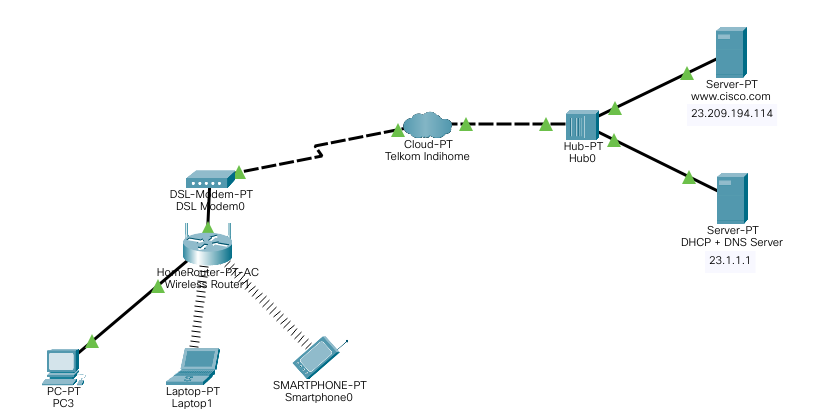
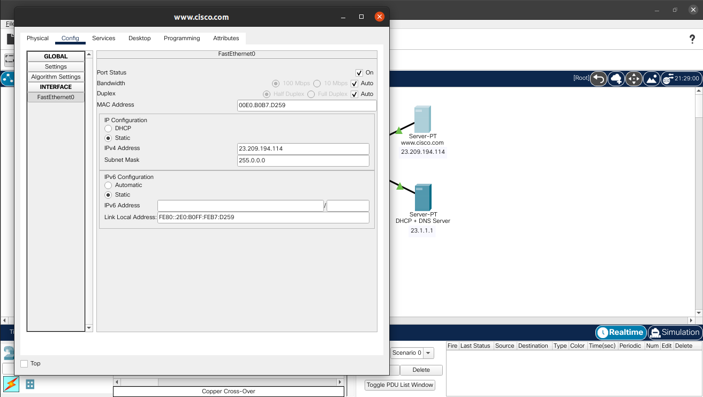
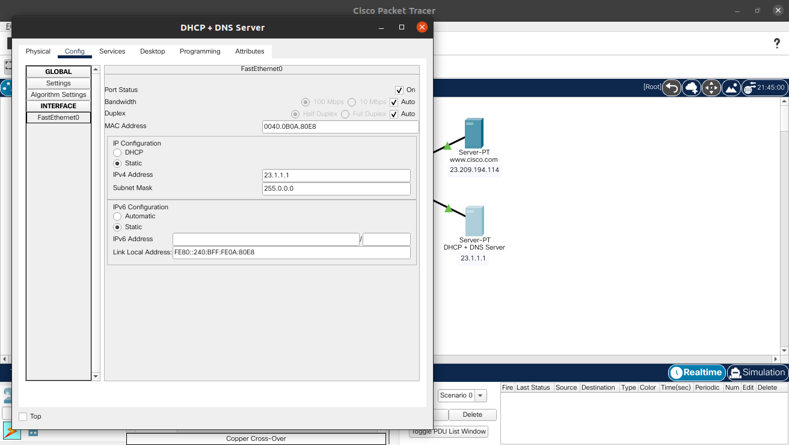
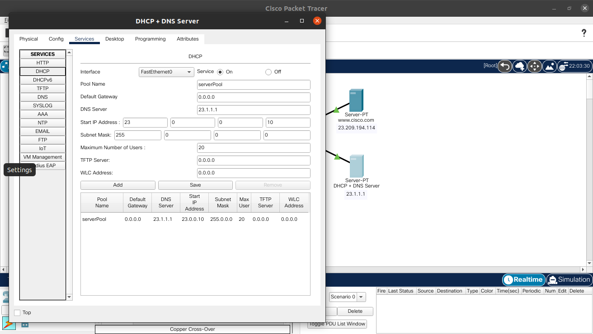
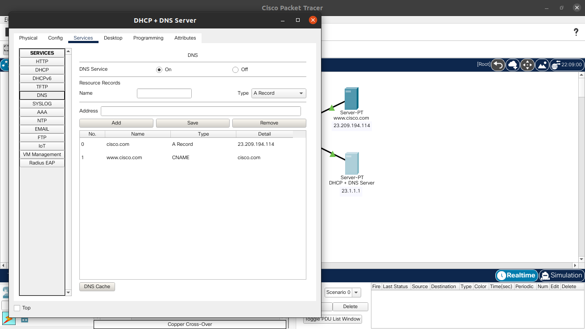
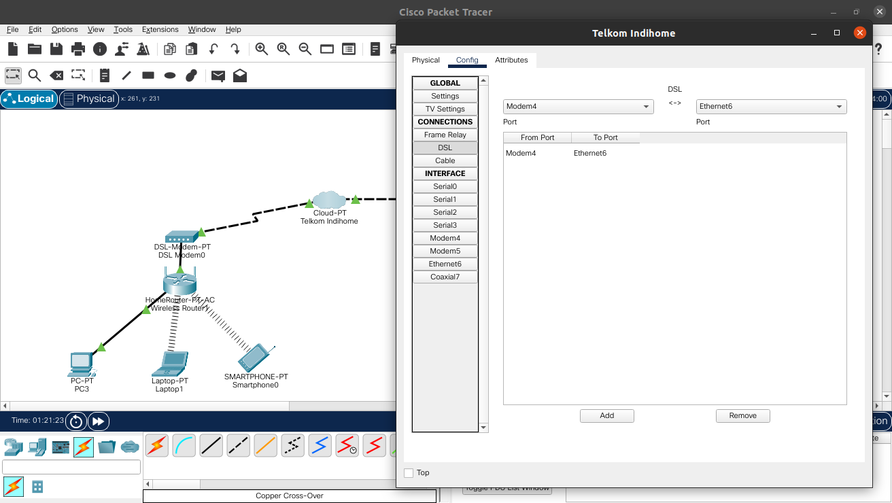
Random
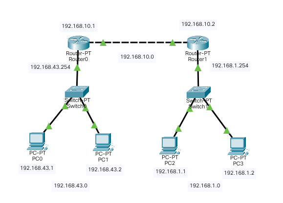
1. Setting pc-
ip address :
192.168.43.x (kiri), 192.168.1.x (kanan) subnetmask :
255.255.255.0 gateway :
192.168.43.254 (kiri), 192.168.1.254 (kanan)
-
Router Kiri :
Router(config)# interface FastEthernet0/0
Router(config-fi)# ip address 192.168.43.254 255.255.255.0
Router(config-fi)# no shutdown
Router(config-fi)# exit
Router(config)# interface FastEthernet1/0
Router(config-fi)# ip address 192.168.10.1 255.255.255.0
Router(config-fi)# no shutdown
Router(config-fi)# exit
Router(config)# ip route 192.168.2.0 255.255.255.0 192.168.10.2Router(config)# interface FastEthernet0/0
Router(config-fi)# ip address 192.168.1.254 255.255.255.0
Router(config-fi)# no shutdown
Router(config-fi)# exit
Router(config)# interface FastEthernet1/0
Router(config-fi)# ip address 192.168.10.2 255.255.255.0
Router(config-fi)# no shutdown
Router(config-fi)# exit
Router(config)# ip route 192.168.43.0 255.255.255.0 192.168.10.1-
Router kanan :
no ip route 192.168.43.0 255.255.255.0
3. RIP : Routing Information Protocol (bentuk ringkas dari no.2) (?) :)
-
Router Kiri :
Router(config)# router rip
Router(config-router)# network 192.168.43.0
Router(config-router)# network 192.168.10.0Router(config)# router rip
Router(config-router)# network 192.168.1.0
Router(config-router)# network 192.168.10.0